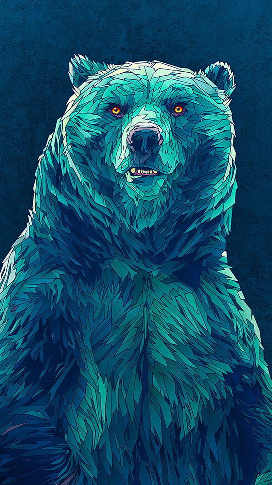

Jade Grizzly Bear(JGB) was given life when nuclear scientist Dr. J Singh was accidentally bombarded with gamma rays from a "gamma bomb" he had invented.
JGB is generally in human form but tranforms into Bear when he is in danger.
The following are the super powers:
- Claws of vibranium
- Shape Shifting
- Can Fly
